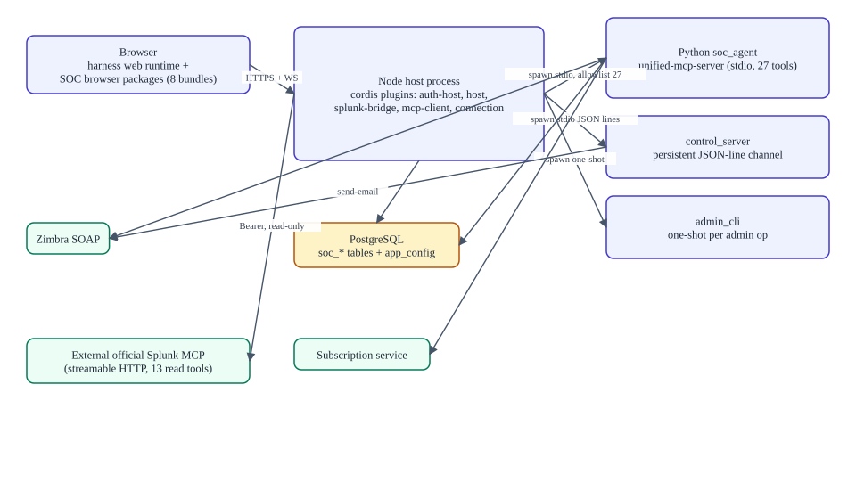
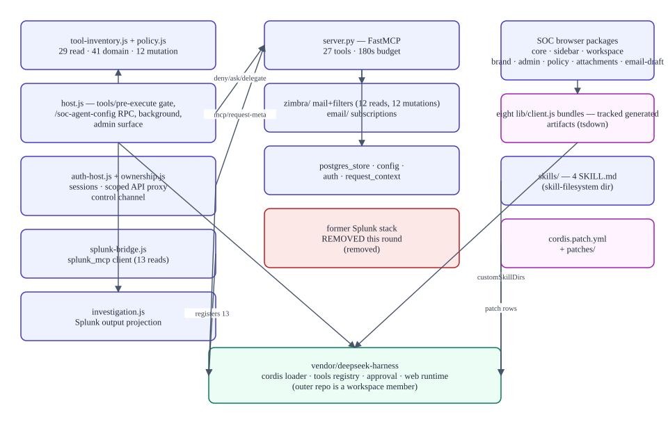

Architecture
Verified against commitb26d55d274cf298a456d84edfbcb42b8dc90134b(2026-09-11T15:35:35Z) · documentation verified 2026-09-12.
Presents: ARCHITECTURE.md — the Markdown file is the source of truth.
Containers and process boundaries

One Node host process (vendored harness web runtime + cordis plugins) serves the browser on port 3080 and spawns: the soc_agent Python MCP server (stdio child, 27 tools, spawn failure fatal), the persistent control server (stdio JSON lines), and one-shot admin CLI children. Why soc_agent and splunk_mcp must not be collapsed: the former is a local server executing as the signed-in user; the latter is a client bridge executing with service credentials against an external endpoint — different identity sources, failure modes, and guardrails.
Components

- policy.js is the vocabulary — its frozen sets (29 read-only, 41 domain, 12 approval tools) are referenced by the gate, the UI, and the tests.
- ownership.js is the largest first-party module (1,875 lines): auth service plus the scoped API proxy that makes harness APIs per-user safe.
- The harness is patched, not forked —
cordis.patch.ymltoggles upstream plugins; one pnpm file patch (dsh-auto-collapse) exists.
Code map
| Layer | Canonical source | Generated | Tests |
|---|---|---|---|
| Node plugins | apps/soc-agent/*.js | — | tests/*.test.js (27) |
| Python server | server/unified_mcp_server/** | — | 75 tests |
| Retained Python | unified_mcp_server/splunk/**, splunk_service.py | — | 11 test files (contracts only) |
| Client | packages/soc-agent-client/src/** | lib/* (tracked) | 9 tests |
| Vendor | vendor/deepseek-harness/** (0.1.1-rc.2) | dists (untracked) | upstream |
Trust boundaries (summary)
- Browser → host: session cookies, same-site checks, fenced routes/upgrades, admin-only privileged APIs.
- Harness → tools: registry restriction + authoritative
tools/pre-executeexact-name allowlist. - Host → MCP: raw allowlists per server, per-call metadata, 185 s timeouts.
- Python → identity:
soc_session_id→ Postgres session → the user's own Zimbra token;account_idselection rejected; 180 s budget. - Output → model: Splunk projection (PII mask, 50 KB), background 64 KiB cap, attachment bounds.
- Mutation → human: action states + approval; email additionally UI-confirmed.
- Patch level: model-facing shell/fs/subagent tool families disabled.
Full treatment: Security & authentication. Per-file index: Reference.